Testing the affordances and constraints of 4o Image Gen
Picking up from where I left off in the last post, I started exploring the idea of integrating multi-modal output into the LLM ideation partner. In this post, I’ll be testing the capabilities of that feature to see whether it can meaningfully enhance text-based ideation by opening up new visual pathways for creativity.
Right now, this feature is going viral online, largely because of its ability to generate images in the Studio Ghibli style. But generating visuals for innovative product ideas goes far beyond applying stylistic filters. It requires the language model to accurately interpret and visualize the details of potentially unconventional tools or concepts—many of which may not even exist in its training data.
That’s why I’ve decided to test it today—to better understand whether incorporating multi-modal output into my LLM application is a strategic and valuable move for supporting creative ideation.
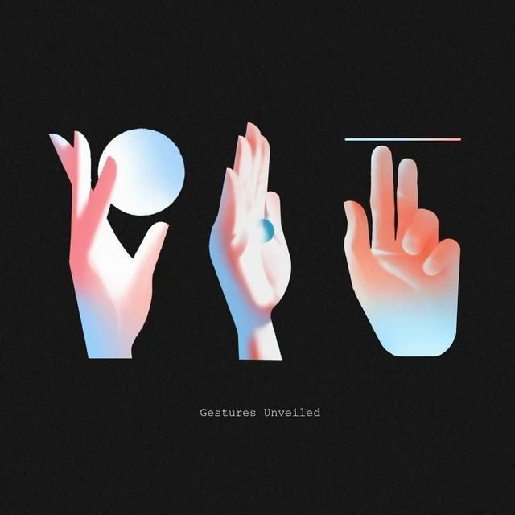
Generating product prototype images
Conclusion goes first: The GPT-4o model is surprisingly effective at generating highly detailed product images with accurate text. The key to this capability lies in crafting an extremely detailed image generation prompt—something that can also be efficiently produced within GPT-4o itself.
The trick lies in crafting a high-quality prompt beforehand. As long as all the necessary details are clearly specified, GPT-4o does an impressive job visualizing them accurately. That’s why ensuring the clarity and completeness of the prompt is the most essential part of the process.
To gain a more comprehensive understanding of this feature, I created a rubric for systematically testing the capabilities of GPT-4o’s image generation in the context of product visualization. For each attribute, I ran multiple tests, asking the LLM to generate high-quality images. I then scored each attribute and included notes with tips and observations for effectively using the tool.
Here’s a snapshot of my rubric.
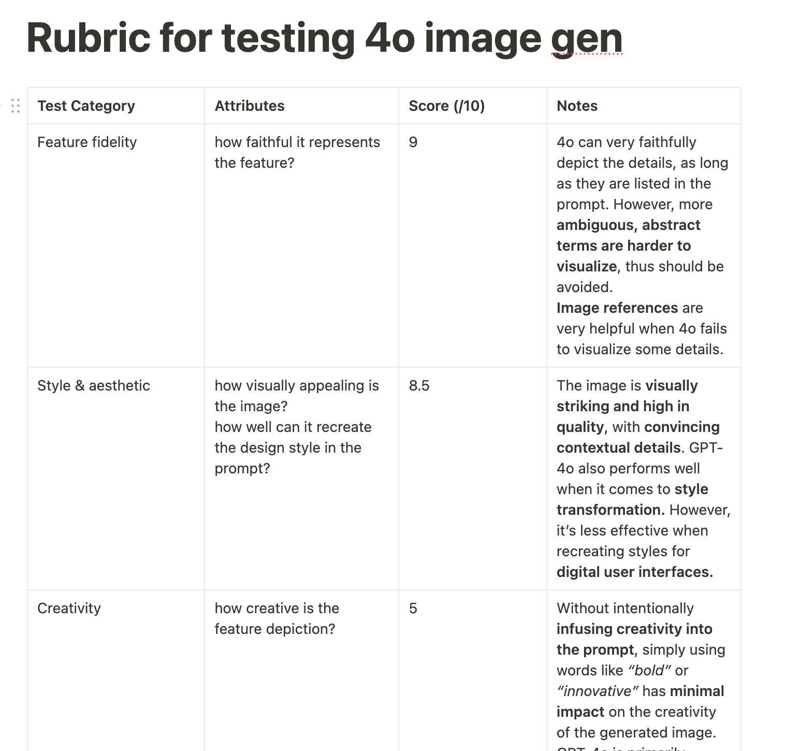
Here are a few practice trial runs worth highlighting. My typical workflow looks like this: First, I ask GPT to generate a product idea (which will eventually be the result of human-AI collaboration in my product). Then, I prompt it to translate the idea into a detailed image generation prompt, making edits if needed. Finally, I ask GPT to generate the product image based on that prompt.
I found this feature particularly effective for generating physical product visuals. Since most of us aren’t professional industrial designers—-and physical products tend to involve more visual variety than digital ones—-having GPT generate reference images is incredibly helpful for bringing ideas to life. Based on my trial runs, the results are visually impressive, as long as the prompt is well-crafted and pointed in the right direction.
Here are a few examples of prompts and the corresponding images:
Design a cozy, emotionally expressive product called HeartLink Plush—a soft, huggable plush toy for international college students that simulates a loved one’s heartbeat. The plush is medium-sized, made with calming, textured fabric (like velvety or knitted material), in gentle tones such as pastel pink, soft gray, or lavender. It has a subtle heart-shaped glow area on its chest, gently pulsing with warm light to mimic a heartbeat. Next to the plush is a phone with a companion app on screen, showing a “connected” status with another plush across the globe. The setting is a dorm room at night, softly lit, with blankets, books, and maybe a cup of tea, evoking feelings of warmth, connection, and comfort during homesickness or study stress.
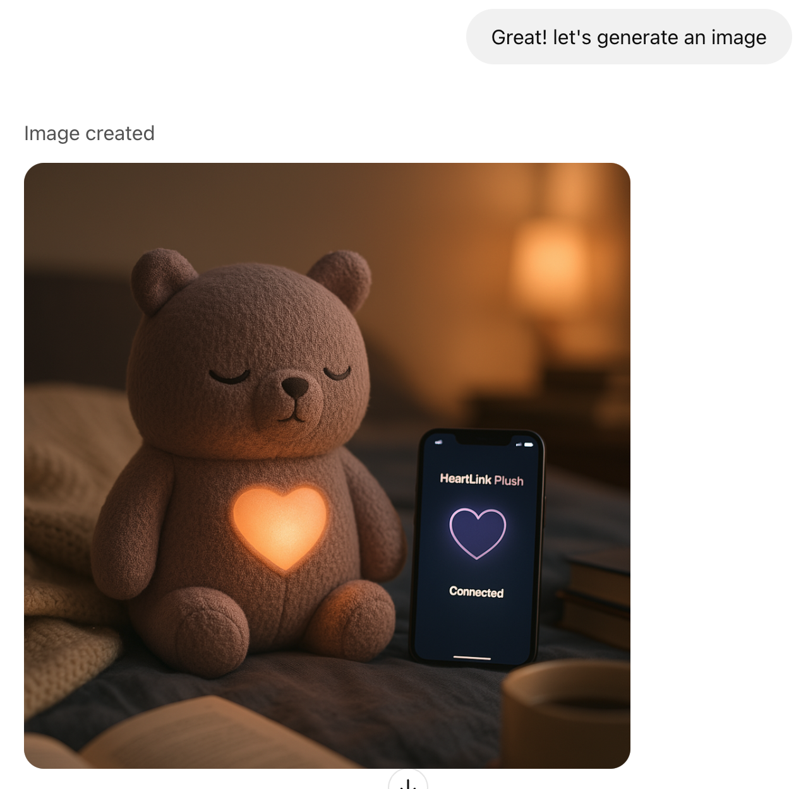
Design a sleek and modern wearable wristband called PulseBand, intended to help college students maintain focus while studying. The band is minimalist, made of soft silicone or woven fabric, in calming colors like matte black, sand beige, or slate blue. The wristband features a small, subtle LED indicator that glows gently during active focus sessions, and a tiny tactile pattern on the inside for discreet haptic feedback. Place the wristband on a student’s wrist as they study at a clean desk with a laptop, notebook, and a coffee nearby. A phone beside them shows the connected PulseBand app with “Deep Work Mode: 23 min remaining” on screen. The overall setting is calm and tech-savvy, emphasizing productivity and personal focus without distractions.
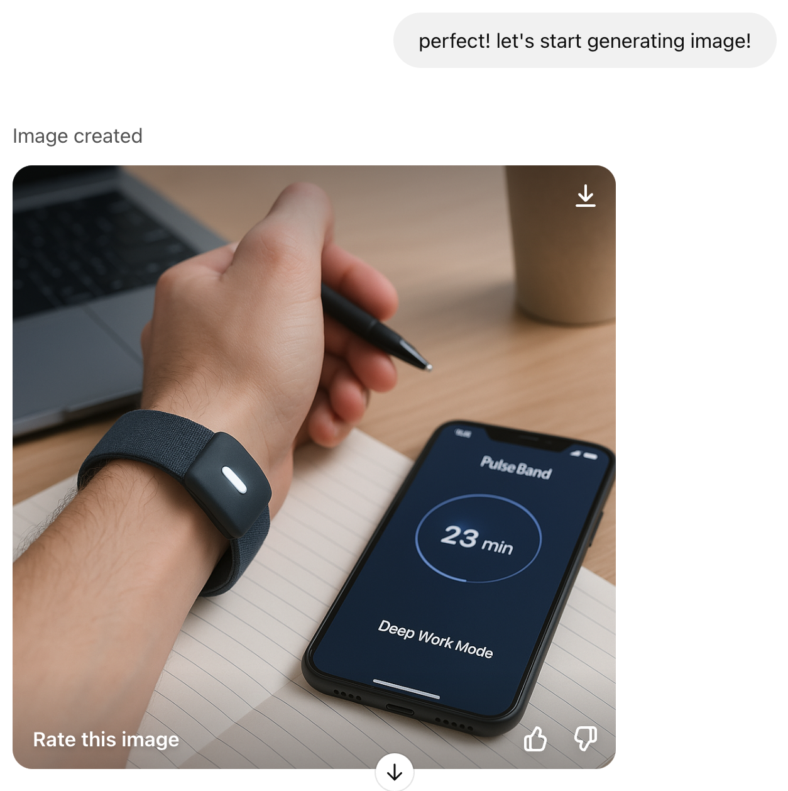
What I also found fascinating was the accuracy in detail changes and the effectiveness of style transformations. After my spring break trip to Vienna, I asked GPT to generate a product idea for a Vienna-themed souvenir. Here’s the prompt it came up with:
Design a charming, photo-realistic souvenir product called “Sound of Vienna – Mini Pop-Up Stage.” The product is a flat, postcard-sized item that unfolds into a detailed, 3D paper pop-up scene. When opened, the stage reveals illustrated paper cutouts of a classical orchestra mid-performance—string musicians, a conductor, and a grand piano—set inside an ornate Viennese concert hall inspired by the Vienna State Opera.
The backdrop features intricate details: golden balconies, velvet red curtains, Baroque arches, and chandeliers. At the base of the stage is a small button that plays a 10-second snippet of classical music (e.g., Strauss’s Blue Danube), with a small speaker subtly embedded into the cardboard.
The overall aesthetic is elegant yet whimsical. The color palette includes warm golds, soft creams, deep reds, and touches of hand-drawn texture. Show the item halfway opened on a wooden table, with another folded version beside it in a flat protective sleeve that reads “Sound of Vienna – Strauss Edition.” Nearby, place a hand or travel bag to suggest how easily it fits into luggage.
Emphasize portability, craftsmanship, and the magical storytelling of Vienna’s musical legacy in a physical keepsake.
Intially this is what GPT gave me: 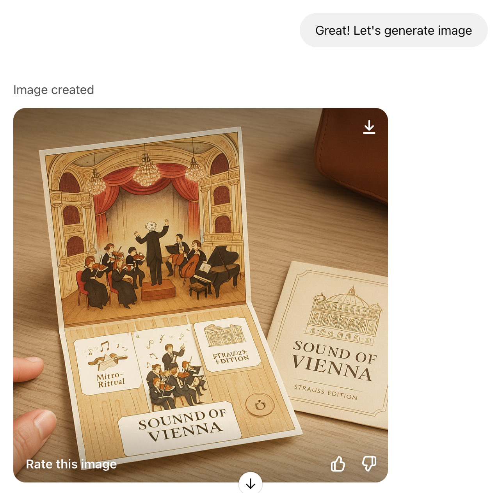
I was not very satisfied with the style, wanting the postcard to be more three-dimensional. So I used another image as a reference:
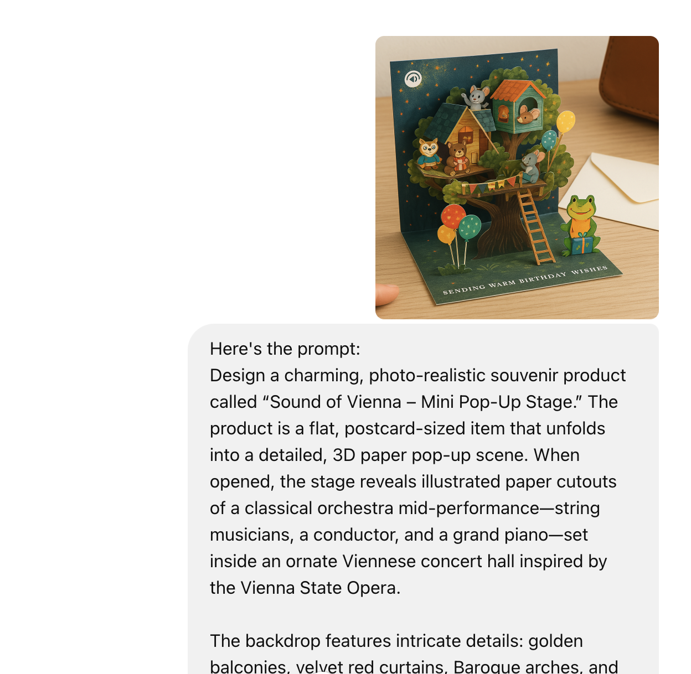
This time, GPT did an extremely well job in replicating the style of the postcard without changing too much of the original design.
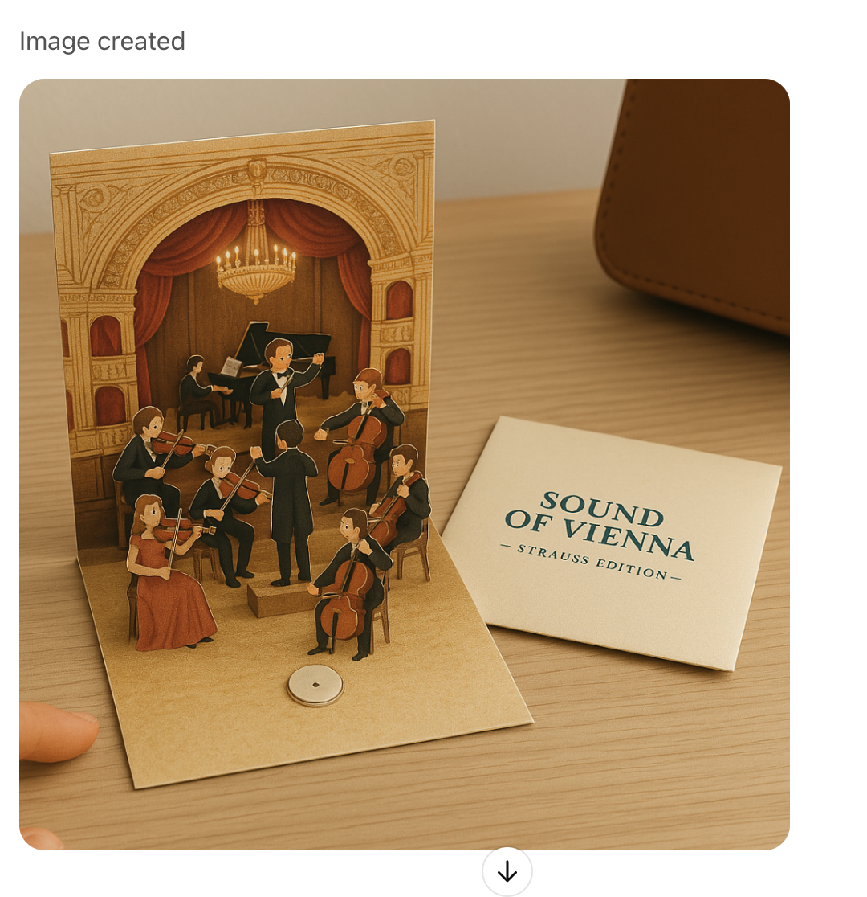
To continue experimenting with the style transformation feature, I asked GPT to render the postcard design in the style of a Monet painting—and here’s what it produced:
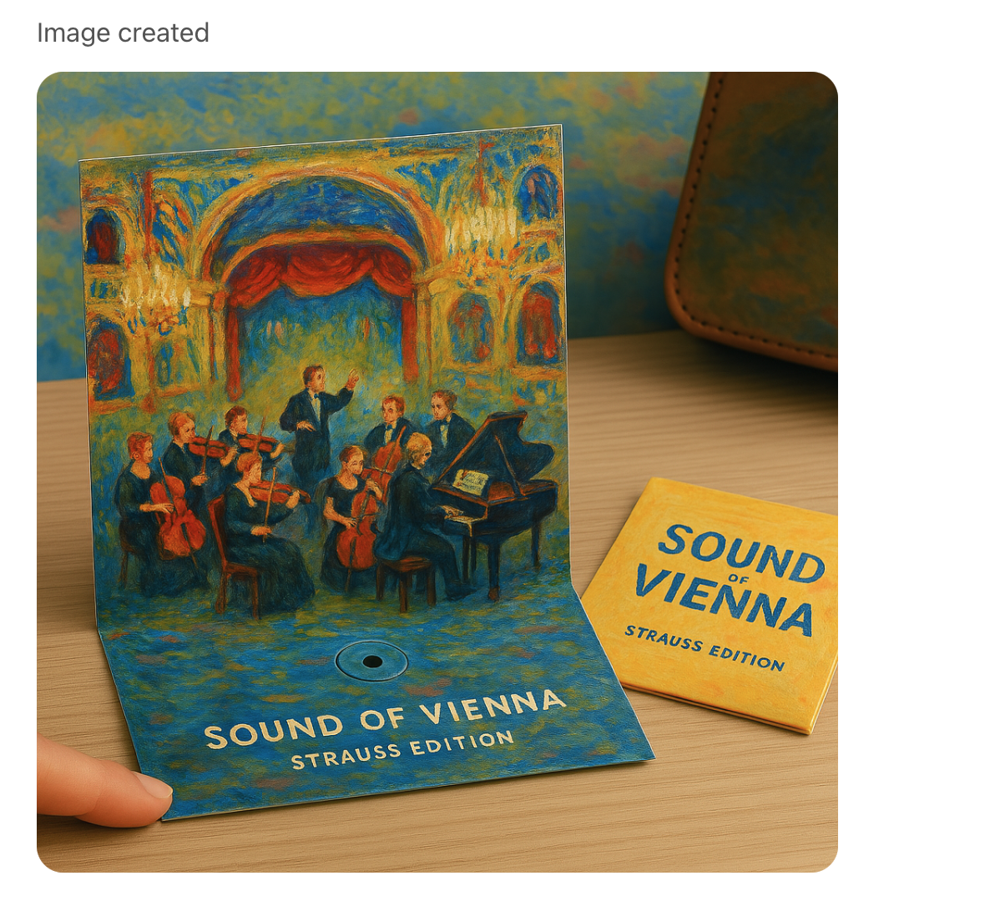
I can further prompt it to make it more 3D, but I believe these examples should be sufficient to demonstrate the powerful capability of 4o Image Gen.
Tips for using 4o Image Gen for product image generation
Although the GPT-4o model does a solid job generating high-quality product images, the resulting design may not always align perfectly with the user’s expectations. If the user has specific ideas about the structure, material, shape, or style of the product, it’s important to state those details explicitly in the prompt. This helps ensure the model stays faithful to the original vision.
As a result, this process requires more intentionality in prompt engineering, especially when describing physical products for image generation. The clearer and more detailed the description, the more accurate and useful the output will be.
Combining concepts
A more specific feature I’d like to develop in this product is the ability to generate images that merge two or more seemingly unrelated concepts. Many innovative product ideas are born from conceptual recombination, and I believe adding visual stimulation to this process could significantly boost creativity. To explore this, I selected several pairs of distant or contrasting concepts, and challenged the LLM to combine them into coherent product ideas, which were then visualized through image generation.
Conclusion goes first: After several trials, I was genuinely impressed by GPT-4o’s ability to integrate distant concepts into compelling product prototypes. Its text generation feature makes it incredibly easy to combine abstract or unrelated ideas, and the image generation feature faithfully visualizes the described details, even when the object isn’t something we’d typically encounter in real life. However, physical products still have a better image quality than digital products in terms of its plausibility and design.
Next, I asked GPT to generate the image prompt, which was then used to create the final visual. The overall vibe of the image aligns well with the product concept, and I’m quite satisfied with the level of detail it was able to capture.
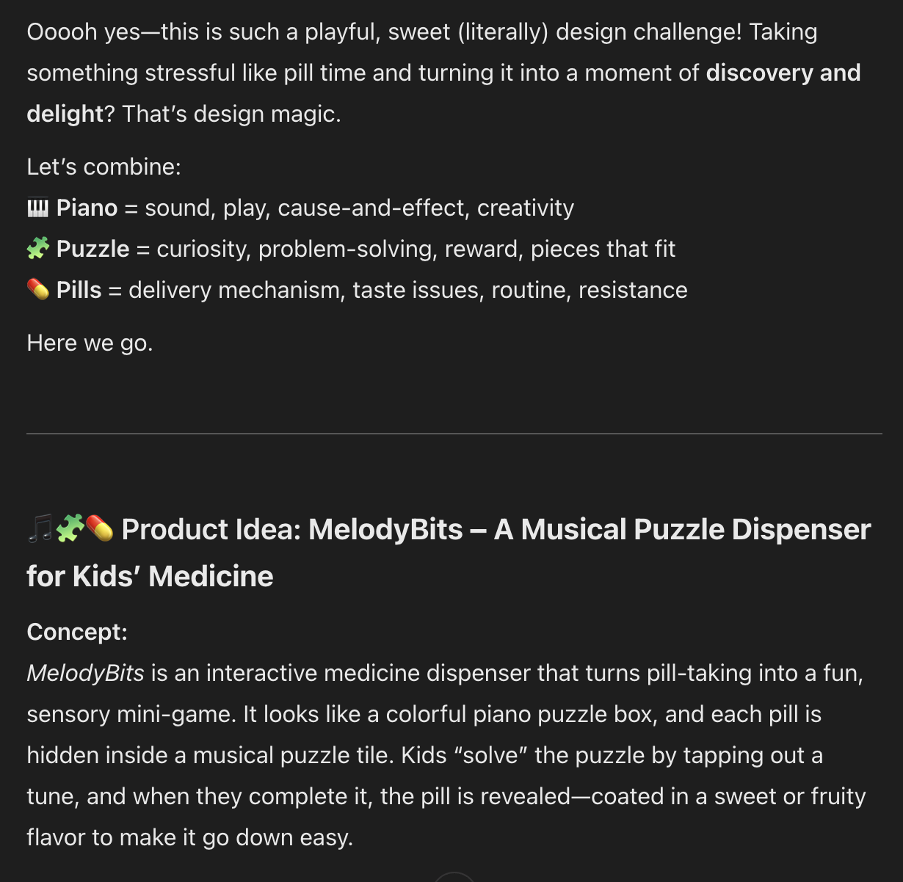
Next, I asked GPT to generate the image prompt, which was then used to create the final visual. The overall vibe of the image aligns well with the product concept, and I’m quite satisfied with the level of detail it was able to capture.
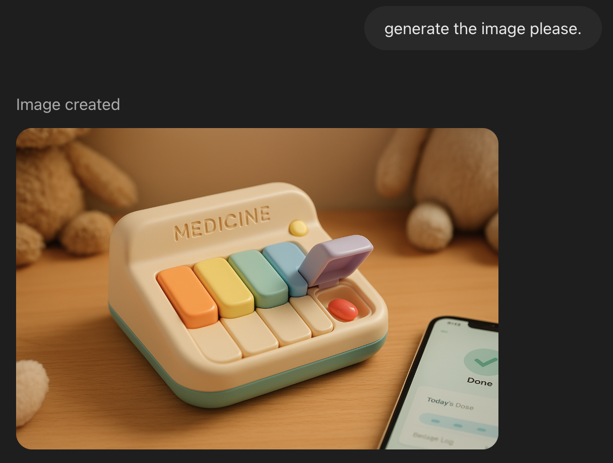
That wasn’t quite enough—I wanted to make quick design changes to test the consistency of the image generation. To start, I prompted it to change the texture to transparent frosted glass. It did a great job! The result was both visually consistent and true to the updated prompt.
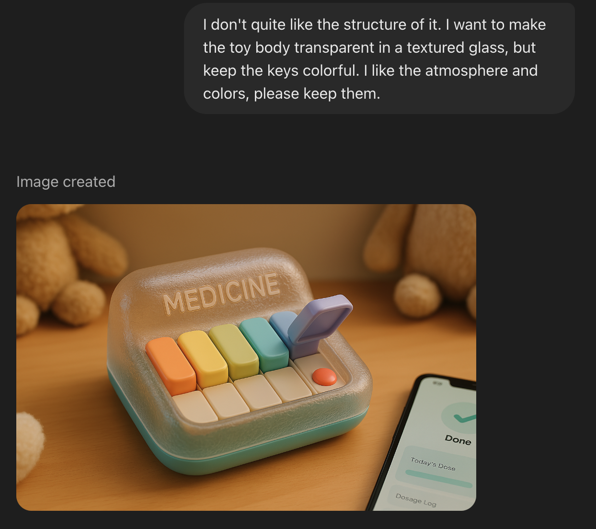
Finally, I asked GPT to add some “puzzle” elements to make the product more interactive and playful. While the resulting concept made less practical sense to me—the structure felt somewhat arbitrary and lacked a clear functional rationale—I was still impressed by the image’s visual consistency and aesthetic appeal. To fix the problem of implausible design, refining the prompt itself would likely be a more effective solution.
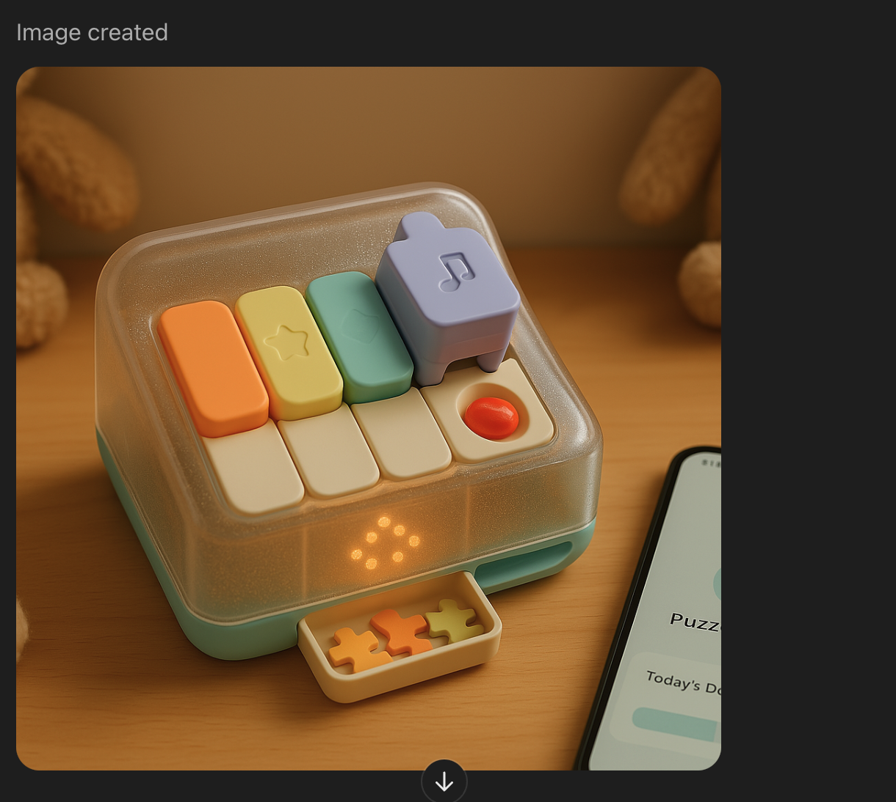
Conclusion
Overall, I’m quite satisfied with the capabilities demonstrated by GPT-4o’s Image Generation, and I believe it will be a valuable addition to my ideation tool. In the next post, I’ll start bringing everything together and begin writing some actual code to integrate the components.